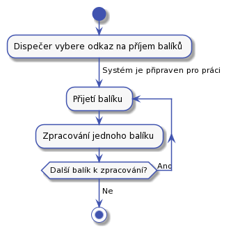
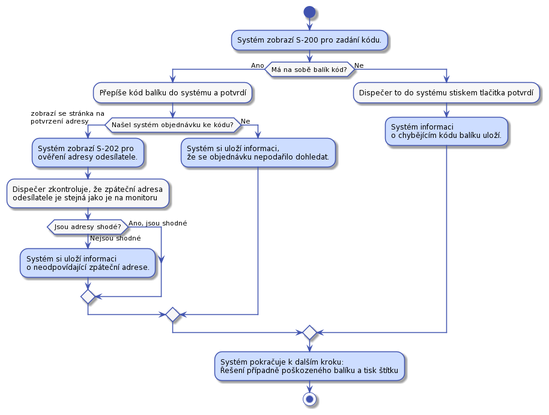
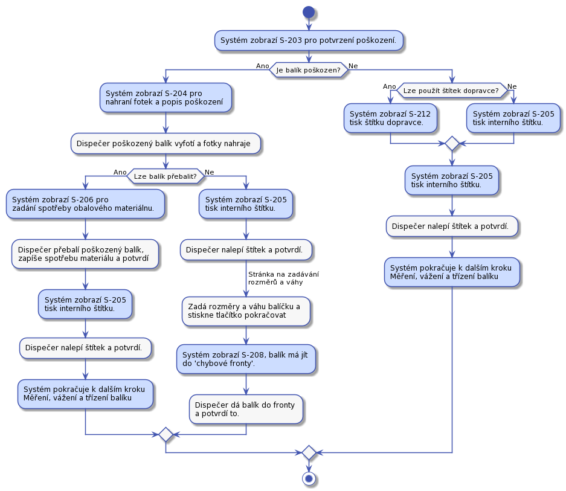
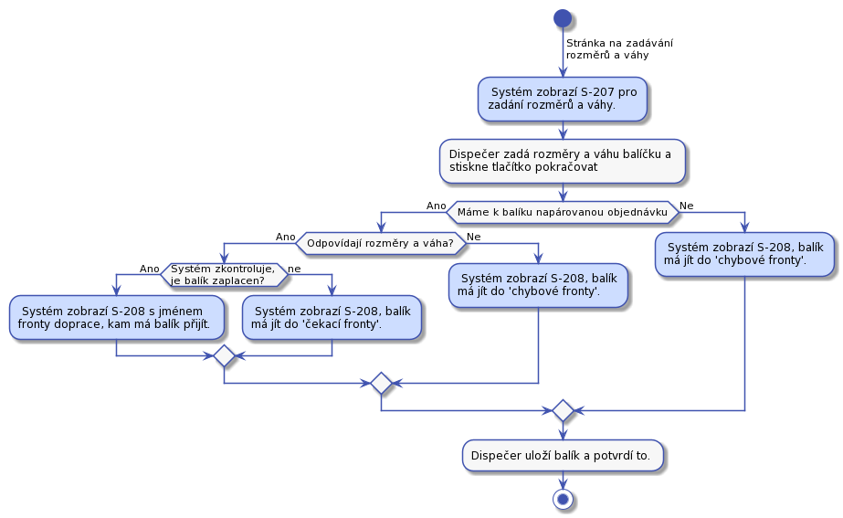
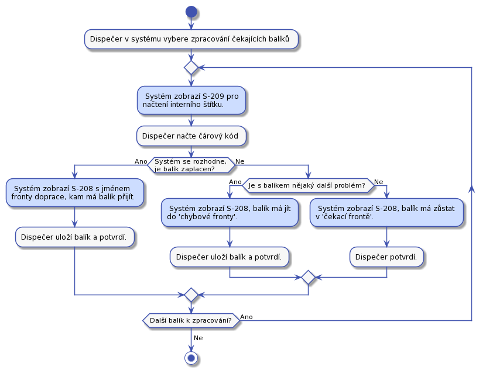
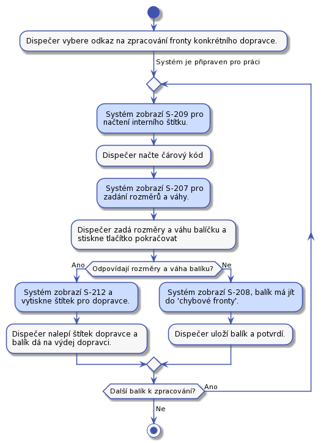
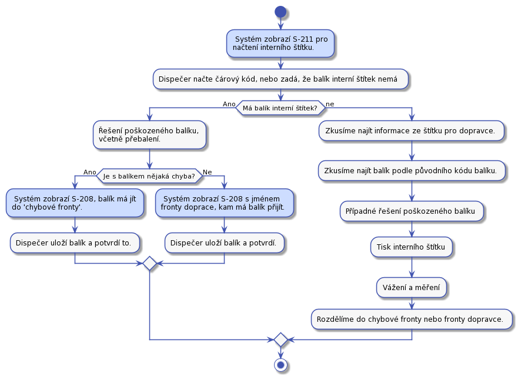

Dispečer
Dispečer je na depu. Depo je místo, kam se doručují balíky a z něho zase vydávají dalšímu doručování. Z depa se balíky vydávají dopravci. Dopravce je doručí koncovému adresátovy, nebo se mohou doručit do dalšího depa. V aktuální verzi s posílaním do dalšího depa nepočítáme.
Balíky jsou rozděleny do takzvaných front. Fyzicky to mohou být například regály. Fronty jsou místa, kde jsou balíky umístěny do dalšího zpracování. Fronty jsou tyto:
- Přijímací fronta - Zde jsou balíky čekající na zpracování v UC-21.
- Čekací fronta - Zde balíky čekají, až zákazník zaplatí za přepravu.
- Chybová fronta - Fronta pro chybové balíky. Které například nelze dohledat v systému, nemají kód nebo hrubě neodpovídají rozměry.
- Fronty pro dopravce - Každý dopravce bude mít svojí frontu, ze které mu budem balíky připravovat na vydání. Bude to například fronta pro DPD.
Štítek na balíku
Při oběhu balíku v depu v některých případech použijeme místo interního štítku štítek dopravce. K tomu, aby to bylo možné, musí dopravce poskytnout nějaký způsob, jak balíku přidělit identifikační číslo, případně další vyžadované informace dřív, než balík předáme k dopravě. Například poskytne číselnou řadu, z které budeme balíkum přidělovat čísla. Dále musí mít na balíku čárový kód, který nám umožní rychlou identifikaci balíku. Identifikace balíku s štítkem dopravce, nesmí být složitějí než identifikace balíku s interním štítkem. Také nesmí vadit, že se může stát, že některá přidělené Id nevyužijeme. Například když zákazník zruší objednávku.
UC-20 - Přijetí balíků
Dispečer přijme balíky od dopravce a dá je do přijímací fronty k dalšímu zpracování. Dispečer potvrdí převzetí balíku podepsáním protokolu dopravce.
UC-21 - Zpracování přijatých balíků
UC popisuje, zadání balíků do systému.
Předpoklady:
- Dispečer je přihlášený do systému.
- Dispečer má jeden nebo více balíků ve frontě na přijetí.
Kroky:
Dispečer bude frontu balíků zpracovávat následovně:
- Dispečer si na S-01 základním rozcestníku vybere odkaz pro zpracování přijatých balíků.
- Tím se mu zobrazí první stránka S-200 pro zadání kódu balíku.
- Dispečer přijme balík.
- Po přijetí balíku systém nabídne jestli chce dispečer pokračovat:
Tento proces bude vypadat následovně:

Zpracování jednoho balíku
Zpracovnání balíku je pro srozumitelnost rozděleno do samostatných kroků.
Proces čtení informací z balíku
Kroky:
- Dispečer na stránce S-200 pro zadání kódu balíku.
- Má balík na sobě kód?
- Ano má.
- Dispečer kód balíku opíše a stiskne pokračovat.
- Systém se pokusí k zadanému kódu dohledat objednávku.
- Objednávka existuje
- Systém zobrazí stránku S-202 pro ověření adresy odesílatele.
- Dispečer zadá, jestli zpáteční adresa uvedená na balíku odpovídá zpáteční adrese uvedené na objednávce. Výsledek zaznamená a systém si ho dál pamatuje.
- Objednávka neexistuje. Systém si tuto informaci uloží. Sem bude patřit spíše teoretický případ, že bude nalezeno objednávek víc než jedna.
- Objednávka existuje
- Balík na sobě nemá kód
- Dispečer stiskne tlačítko, "Balík na sobě náma kód".
- Systém tuto informaci uloží a pokračuje dál.
- Ano má.
Postup je pro srozumitelnost na samostatném obrázku:

TODO přidat krok na opisovani poznamky na baliku
Řešení případně poškozeného balíku, měření a vážení.
Řešení případně poškozeného balíku a tisk štítku
TODO přidat odkaz na UC-210
Ve všech případech dispečer na balík tiskne interní štítek. Interní štítek musí byt nalepen tak, aby nepřekrýval informace, které na balík zadal odesílatel. Informace od odesílatele se mohou hodit pro pozdější řešení chyb.
Proces začíná na obrazovce S-203, kde dispečer musí rozhodnout, jestli je balík poškozen nebo ne. Jedná se o poškození obalu, nebo poškození celého balíku, které by ztížilo nebo znemožnilo další doručovaní.
Pokud balík není poškozen, pak lze tisknout štítek na balík. Pokud to lze, pak systém zobrazí stránku S-212 pro tisk štítku dopravce, jinak zobrazí stránku S-205 pro tisk interního štítku, který se vytiskne podle šablony interního štítku. Pokud je balík poškozen pak se zobrazí stránka S-204 pro popsání míry poškození a několik fotek. Na stránce se také dispečer musí rozhodnout, jestli lze balík přebalit a posunout dál do procesu doručení. Pokud balík nelze přebalit, pak se vytiskne interní štítek, dispečer zadá rozměry, váhu a balík putuje do chybové fronty. Pokud lze balík přebalit zobrazí se jednoduchá stránka S-206 pro zadání spotřeby obalového materiálu. Pak se vytiskne interní štítek.

Pokud balík nemáme v chybové frontě, můžem jít k poslednímu kroku."
Měření, vážení a třízení balíku do front
V tomto kroku máme balík opatřený interním štítkem. Poslední krok začíná obrazovkou S-207 pro vážení a měření. Máme-li z předchozího procesu napárovanou objednávku na balík systém vyhodnotí jestli je balík zaplacen a k jakému dopravci má dál pokračovat a podel toho vybere frontu. Pokud nebyl balík spárován s objednávkou pak půjde do chybové fronty. Informace o další frontě bude na obrazovce S-208. Proces je detailně vidět z následujícího obrázku:

To jestli naměřené rozměry odpovídají těm, které zadal zákazník do objednávky zjistíme následovně. Seřadíme hodnoty ż obou skupin podle velikosti a pak navzájem porovnáme od nejmenší dvojice po nejvyšší. Tím odstraníme chybu, kdy zákazník zadá rozměry ve špatném pořadí. Jednotlivé hodnoty porovnáme tak, že pokud se budou lišit o méně než 5 cm, pak je budem považovat za shodné. Pokud se dále nebudou odlišovat o více než 10%, pak je budem považovat za shodné. Váha se bude porovnávat s tolerancí 10%.
Ve všech případech balík změříme a zvážíme. Po tom, co se dispečer dostane obrazovku S-208 se může rozhodnout, jestli chce pokračovat v zadávání nebo zadávání ukončit.
UC-22 - Zpracování balíků čekajících na zaplacení
Dispečer v systému otevře stránku pro zpracování balíků čekajících na zaplacení. Pak začne zpracovávat balíky jeden po druhém v libovolném poředí.
Proces začíná na obrazovce S-209 pro načtení interního štítku. Pak podle toho do jaké fronty má balík přijít systém informuje dispečera obrazovkou S-208

Do chybové fronty se balík přesune například, když zákazník nezaplatí déle než definovanou dobu a pracovníkovi podpory se jestě nepodařilo se zákazníkem domluvit co s balíckem dál dělat.
Dispečer se může kdykoliv během zpracovávání fronty rozhodnout činnost přerušit.
UC-23 - Zpracování balíků ve frontě dopravce
TODO přidat odkaz na UC-210
Dispečer v systému otevře stránku pro zpracování fronty konkrétního dopravce. Pak začne zpracovávat jeden balík po druhém v libovolném pořadí takto:
Čtečkou čárových kódů načte z interního štítku kód balíčku. Systém požádá o zvážení balíku. Dispečer ho zváží. Po vážení se aktuální váha balíku porovná s hodnotou naměřenou po nalepení interního štítku na balík. To by mělo snížit pravděpodobnost, že dojde k záměně balíků, nebo jiné chybě. Pokud váha nesedí balík bude vložen do chybové fronty. Pokud váha odpovídá, systém zobrazí stránku S-212 pro tisk štítku dopravce.

Pokud se balík posílá po ČR použijeme Českou poštu. Proto musí v depu existovat fronta pro Českou poštu. V případě chyby potřebujeme poslat balík zpět zákazníkovy.
Dispečer se může rozhodnout, že činnost přeruší i když je fronta k doručení zpracovaná jen částečně.
UC-24 - Zpracování balíků v 'chybové' frontě
Dispečer v systému otevře stránku pro zpracování chybové fronty. Všechny balíky bude pojednom brát a zpracovávat. V případě problému se spojí s pracovníkem podpory a společně se pokusí domluvit se na dalším postupu. Po tom co dispečer naskenuje interní štítek na obrazovce S-209 pro načtení interního štítku systém vyhodnotí jestli je balík možné poslat dál, nebo má ještě počkat ve frontě. Případně pomocí obrazovnky S-210 lze požádat dispečera o nějakou další akci s balíkem.

Když systém ví, do jaké fronty má balík pokračovat, nebo co se s ním má stát, pak se zobrazí obrazovka S-208. Pokud není stále jasné, co se má s balíkem stát, zobrazí se obrazovka pro řešení poškozeného balíku S-053 nebo obrazovka s detailem chyby při zpracování balíku S-054. Na chybových obrazovkách bude tlačítko na pokračování na další načítání čárového kódu.
UC-25 - Předání balíků dopravci
Před tím než dispečer předá balíky z příslušné fronty dopravci, musí připravit předávací protokol. Dispečer v systému najde příslušnou frontu dopravce a stiskne na ní, že jí chce ukončit. na to mu systém vygeneruje předávací protokol, případně jeho kopii.
Když pro balíky osobně přijde dopravce, dispečer mu předá balíky a nechá si v protokolu potvrdit předání balíků.
Zde budeme muset zohlednit různé chování dopravců při předávce balíků.
UC-26 - Příjem nedoručených balíků od dopravce
Předpokládáme, že dopravce nepřendá interní štítek z jednoho balíku na druhý. Předpokládáme, že interní štítek se může z balíku ztratit nebo se zničit.
Stejný proces jako UC-21 s tím, že balík může mít interní štítek a může být poškozen. Balíky odesíláme pouze spojené s objednávkou a zaplacené, toho lze využít k omezení hledání balíku.
To, že jsme balík už jednou předali dopraci znamená, že byl zaplacen. Tedy do čekací frnty nikdy nepůjde.

Některé kroky jsou zaznamené bez detailních obrazovek, protože jsou už popsane výše. Hledání balíku podle štítku dopravce není popsané, protože bude záviset na detailech, které budem vědět o štítku konkrétního dopravce.
Při přijímaní balíku od dopravce ve všech případech zajistíme, ze interní štítek bude nalepený a změříme a zvážíme balíček.
UC-27 - Ztracený interní štítek
Identifikace balíku se ztraceným nebo zničeným interním štítkem. Na hlavním rozcestníku S-01 bude odkaz "Poškozený interní štítek". Za ním bude obrazovka na hledání balíku. Dispečer omezí hledání na fronty, nebo stavu, ve kterém balíček našel. Případně podle kódu balíčku, nebo dalších informací na balíku. Po nalezení klikne na "tisk interního štítku" a štítek se mu znovvu vytiskne. Stejně tak se zobrazí roozměry, váha a adresa odeslílatele pro kontrolu.
To, že balík nemá štítek se může stát v libovolné frontě při jakékoliv manipulaci s balíkem.
UC-28 - Balík ve špatné frontě
Kdykoliv v nějakém UC dispečer načte interní štítek a zároveň pokud se podaří balík spojit s objednávkou, pak systém ví v jaké má být balík frontě. Systém také ví, jaký UC dispečer vykonává. Když dojde ke stavu, že balík má být v jiné frontě, pak systém zobrazí chybovou obrazovku a řekne dispečerovi, kam má balík dát. Proběhnout by to mělo takto:
V tomto UC je řešeno zrušení objednávky. Pokud nastane zrušení objednávky, pak se balík posílá na odresu odesílatele nebo zníčí.
Tento UC se provede, kdykoliv v jiném UC dispečer načítá interní štítek.
UC-29 - Rozdělení jednoho balíku na víc
Předpoklady:
- Dispečer má zobrazený detail balíku S-05, který bude rozdělen do více balíků.
Kroky:
- Dispečer klikne na tlačítko rozdělit.
- Systém vytvoří nový balík, který bude mít následující vlastnosti:
- V historii o tom vznikne záznam s odkazem na nový balík.
- Nebude mít interní štítek.
- Nebude mít kód balíku.
- V historii bude jedinný zaznam o tom, že balík byl vytvořen rozdělením z balíku a odkaz na původní balík.
- Zpáteční adresa bude kopie zpáteční adresy z původního balíku.
- Doručovací adresa bude kopie doručovací adresy z původního balíku.
- Balík bude napojen na stejnou objednávku jako původní balík.
- Stav bude odvozen ze stavu objednávky:
- Pokud byla objednávka uhrazená, pak se nový balík vytvoří ve stavu
Ve frontě, kde bude čekat na doručení na doručovací adresu. - Pokud objednávka nebyla uhrazená pak se balík vytvoří ve stavu
Ve frontě, kde bude čekat na zaplacení.
- Pokud byla objednávka uhrazená, pak se nový balík vytvoří ve stavu
- Systém zobrazí detail nového balíku.
- Dispečer zabalí nový balík.
- Dispečer přidá nový záznam o měření a vážení balíku.
- Dispečer vytvoří a nalepí interní štítek balíku.
- Dispečer může od původního balíku vytvořit více balíků.
- Dispečer se vrátí k původnímu balíku a
- Hotovo.
UC-210 - Tisk a nalepení štítku
Při přijímání balíku a při zpracovná balíků ve frontě pro dopravce je potřeba tisknout interní štíttek nebo štítek dopravce. Jeden štítek nikdy netisknem dvakrát. Je to obrana před náhodným nalepením jednoho štítku na dva balíky.
Předpoklady:
- Systém zná balík, ke kterému tiskneme štítek.
Kroky:
- Systém zobrazí obrazovku pro tisk interního štítku S-205 nebo obrazovku pro tisk štítku dopravce S-112.
- Zároveň se zobrazením systém provede:
- Vytvoří se nový štítek a napojí se na balík.
- Na tiskárnu štítků se pošle pokyn k tisku nového štítku.
- Pokud je na balíku takový štítek nebo štítky, kde by mohlo dojít k záměně s právě vysknutým štítkem, pak dispečer zvolí jednu z možností: :
- Odlepí starý štítek balíku.
- Starý štítek znehodnotí. TODO Jak? Utrhne ho, nebo zamaluje fixou? Neco dalsiho?
- Dispečet vezme nový štítek a nalepí ho na balík.
- Hotovo.
Alternativy:
- Pokud se nalepení vytisknutého štítku z nějakého důvodu nepovede (štítek se třeba roztrhne), pak dispečer stiskne "Znovu vytisknout". Tím se spustí bod 2.